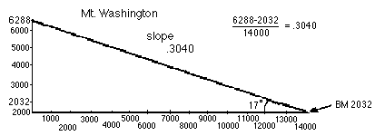

Answers for Chapter 14 Sample Problems
2. The slope of a straight line between 2 points, is the (difference in the
y's) divided by (the difference in the x's), sometimes called the rise/run. In
the dot graph below, for the slope of the line between (3,3) and (0,1), we get
(3-1)/(3-0) = 2/3 .
3.The
two problems below were originally done by hand
by a 6th grader.

You can see that he found, not surprisingly, that east-central Illinois is
quite flat and the slope is 0! There are other nearby spots not as flat as the part he
chose. You could do this near your house or school.
Both of these figures were computer-enhanced, mainly for readability
purposes. But it was done from a topographic map.

One
of my calculus students was talking about the downward slope of her
driveway into their garage, which made it very difficult to maneuver in
the winter time. I'll bring up the slope of a roof (really 1/2 the
slope), the gradient of a road (given in %), the pitch of a screw, etc.
5. Estimating
slopes
6.
Zooming in on a curve at a point, then finding the
slope of the tangent at that point.
The table below
shows various x-coordinates and the slope of the tangent, for the curve
y = x2
x-coordinate slope of tangent
1
2
2
4
3
6
Looking at the pattern, the slope of the tangent is 2x, which is the
derivative of x2.
For the horizontal line say, y = 7 the slope
is 0, for the straight line y = x, the slope is 1,
so the derivative of x is 1. If you zoom in on points on the curve
x3, you'll get 3x2. Putting these in the table below:
function derivative
7
0
x
1
x2
2x
x3
3x2
Look for a pattern in the table above. Can you predict the derivative
of x4? of xn ? of 7x3 ? of 5x3 +
7x2 ?
7. Derivatives as done in
textbooks.
8. Tickertape.
9. The slope of the
tangent to the curve y = x3 and beyond!
10. Rectangles of constant
perimeter of 20
Back to
Ch. 14 problems
To choose sample problems from
other chapters
To order Don's
materials
Mathman home